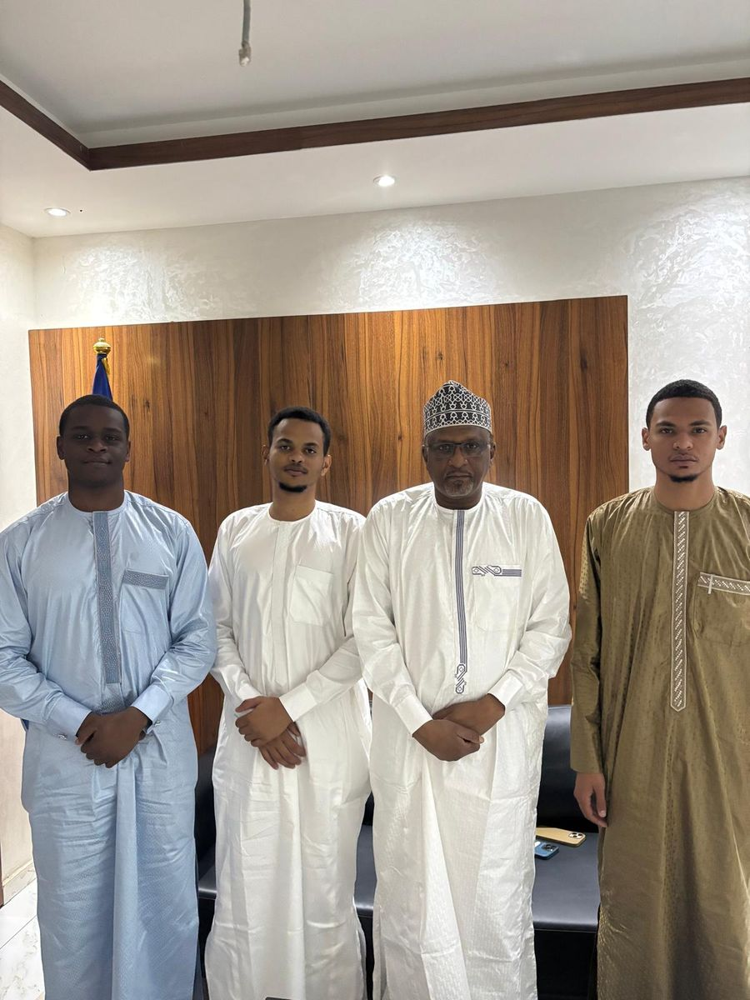

Audience avec le ministre de l'Éducation nationale et de la Promotion civique
Audience accordée par Son Excellence Dr Aboubakar Assidick Choroma, ministre de l'Éducation nationale et de la Promotion civique, durant laquelle nous avons pu présenter notre association. Nous avons eu un échange très positif, portant notamment sur la possibilité de nouer des partenariats avec des universités en Afrique pour accompagner des élèves de Terminale vers des filières d'excellence.